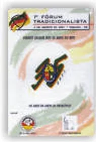

Depto. Cultural · Teses e Documentos
Criação da Carta de Princípios
Resumo do Livro 1 do Fórum Tradicionalista.
Criação da Carta de Princípios
Download em PDF
Bravos homens idealizaram um movimento de extrema grandeza cultural, mas não imaginavam que suas ideias fossem tão bem aceitas e difundidas rapidamente, que o fizesse grandioso também em número. Isto nada mais fez do que confirmar quão glorioso foi esta idealização. Todo crescimento rápido pode ter consequências desastrosas. Além disso, o governo e o exército tinham naquele grupo de jovens certa desconfiança, pois exaltavam a Revolução Farroupilha, seus mentores e consequentemente o “20 de setembro”, levando os poderes constituídos a conclusões que pendiam para o lado revolucionário e separatista.
Foi então que Glaucus Saraiva da Fonseca, considerado extremamente inteligente e com a mente de certa forma avançada para a época, se sensibilizou e, por ser muito reservado, fez de forma solitária um documento que, depois de concluído, foi apresentado como sugestão a ser seguido pelos tradicionalistas.
Tal documento foi de extrema importância, fazendo com que o exército o enxergasse com outros olhos, percebendo que o movimento queria andar lado a lado com os governantes. O Conselho Coordenador reconhecendo sua importância para o bom prosseguimento do movimento, decidiu oficializar a Carta de Princípios, que foi aprovada no 8º Congresso Tradicionalista, realizado na cidade de Taquara, de 20 a 23 de julho de 1961, no CTG O Fogão Gaúcho. A partir deste momento ela começou a ser vista como uma lei a ser cumprida, causando uma certa revolta nos gaúchos, que não aceitavam ser mandados, defendendo a ideia de que gaúcho é macho, não recebe ordens de ninguém e é dono de suas próprias razões.
Dentro do movimento, seus efeitos foram para nortear um rumo a ser seguido, pois na época o que prevalecia eram as contradições, onde cada CTG procurava inclinar-se para seu lado, fazendo com que não existisse unanimidade.
Para o bom funcionamento era necessário e de fundamental importância, um perfeito conhecimento e interpretação da mesma.
Aos poucos os gaúchos foram aceitando-a e começaram a perceber que ela só ajudaria o movimento a crescer e que seu objetivo não era obrigar e sim orientar. Hoje essa carta integra o Regulamento do Estatuto do MTG e é a primeira diretriz aprovada no tradicionalismo. Até os dias de hoje a Carta de Princípios continua, de um certo modo, de conhecimento restrito dentro do movimento, tendo este prospecto sofrido sensíveis alterações nos últimos anos, devido a importância dada pelo MTG, fazendo dela assunto de trabalhos realizados, como este de hoje.
Seguindo as palavras do Senhor Ciro Dutra Ferreira e Vilson de Souza, na época de sua criação um dos objetivos mais importantes foi o art. XI, que trata do respeito às leis e os poderes públicos legalmente constituídos, que fez com que o exército e o governo vissem com outros olhos aquele grupo de jovens. E o mais importante nos dias de hoje é o art. XXIX que valoriza e exalta o homem do campo. E dentro deste item salientou a importância do surgimento dos laçadores urbanos, como exemplo, que trazem para a cidade uma parte da realidade da vida rural.
Em poucas palavras podemos destacar como conclusão final de que, através da difusão e preservação da nossa cultura e de nossos valores morais, temos a possibilidade de dar base a uma sociedade harmônica, colaborando assim com o bem coletivo, o progresso e a evolução de um povo que tem como ideal os princípios de Liberdade, Igualdade e Humanidade.
Aspectos da Carta de Princípios
A carta de princípios do Movimento Tradicionalista Gaúcho escrita por Glaucus Saraiva da Fonseca e apresentada, primeiramente, no 7º Congresso Tradicionalista, de 20 a 23 de Outubro de 1960, na cidade de Santo Ângelo, no CTG “20 de Setembro” 3ª RT, tendo sido aceita pelos delegados. Na ocasião, foi nomeada uma comissão para apreciar o conteúdo e apresentá-la por ocasião do próximo Congresso. Assim, com parecer favorável, o documento foi aprovado no 8º Congresso Tradicionalista, de 20 a 23 de julho de 1961, realizado na cidade de Taquara/22ª RT, no CTG “O Fogão Gaúcho”. Por deliberação da 11ª Convenção Tradicionalista, realizada no ano de 1977, na cidade de Santana do Livramento, o documento passou a constituir, na sua integra, o Art. 10 do Regulamento do Movimento tradicionalista Gaúcho.
A carta de princípios é a primeira e principal diretriz filosófica do Tradicionalismo, é o documento máximo a nortear e a orientar as atividades do Movimento Tradicionalista Gaúcho, através das Regiões Tradicionalistas e suas entidades filiadas.
Por ocasião do 36º Congresso Tradicionalista Gaúcho, de 10 a 13 de janeiro de 1991, no CTG “Júlio de Castilhos”, na cidade de Júlio de Castilhos/9ª RT, Dinara Paixão e Adriana de Rosa Yop apresentaram e aprovaram a proposta de realizar, por ocasião dos 30 anos do legado ideológico, um encontro estadual para estudo e reavaliação da Carta de Princípios do MTG.
O referido aconteceu em Santa Maria, no DT “Querência das Dores” nos dias 12, 13 e 14 de Julho de 1991. Sob a Coordenação de Dinara Paixão, os trabalhos foram divididos em cinco grupos:
- Grupo 1: Aspectos Éticos;
- Grupo 2: Aspectos Cívicos;
- Grupo 3: Aspectos Culturais;
- Grupo 4: Aspectos estruturais;
- Grupo 5: Aspectos Filosóficos.
Dentre outras conclusões, os participantes decidiram aprovar, por unanimidade, que: “A Carta de Princípios do Tradicionalismo é resultado de um momento de inspiração e qualquer modificação no seu conteúdo, seria destruir seu valor, como símbolo já aceitos a longos anos. É válida ainda hoje, a preocupação é viável a sua implantação no seio Tradicionalista”.
Significado dos aspectos do documento
1. aspectos éticos
É a parte da Filosofia e da Teologia, também chamada de Moral, cujo objeto, como ciência, são as leis ideais da verdade moral e, como arte, as regras idôneas para governar, com acerto, a própria vida.
Ética constitui-se na reflexão do comportamento moral dos homens, enquanto vivem na sociedade. É a reflexão, que propõem princípios para a ação. A ação como base nesses princípios, torna-se ética. A moral é a aplicação de princípios ou normas de comportamento humano. Todos os grupos humanos preservam seus valores fundamentais, transformando-os em normas, que devem ser seguidas por todos seus membros. A reflexão ética é o ato de repensar as normas e com estes princípios são aplicados ao comportamento humano devendo elevar e realizar a condição humana e a própria natureza.
Os aspectos éticos da Carta de Princípios são:
Art. 3º – Promover no seio do povo, uma retomada de consciência dos valores morais do gaúcho.
Art. 12 – Evitar todas as formas de vaidade e personalismo.
Art. 13 – Evitar toda e qualquer manifestação individual ou coletiva, movida por interesses subterrâneos de natureza política, religiosa ou financeira.
Art. 14 – Evitar atitudes pessoais ou coletivas, que deslustrem e venham em detrimento dos princípios da formação moral do gaúcho.
Art. 15 – Evitar que núcleos tradicionalistas adotem nomes de pessoas vivas.
Art. 16 – Repudiar, enfim, todas as manifestações e formas negativas de exploração direta ou indireta do Movimento Tradicionalista.
2. aspectos cívicos
Civismo não é o simples ensinamento de regras de comportamento, mas é a atuação consciente e esclarecida do cidadão, no seio da comunidade, através do cumprimento dos seus deveres de cidadania e do seu esforço em contribuir para o progresso e engrandecimento de sua Pátria.
A vivência do civismo se processa em círculos concêntricos, cujos perímetros vão desde o lar, passando pela vizinhança, bairro, cidade, país e mundo, abrangendo, em cada um dos círculos, uma série de relações humanas, cada vez mais amplas e mais gerais. É no lar. No seio da família, que começa a ser formado o ser cidadão consciente de seus deveres e dos seus direitos. Somente a educação bem conduzida, formativa ao invés de informativa, pode proporcionar ao indivíduo, condições de discernimento, que lhe permitam vencer a tendência natural ao egoísmo à imitação e a massificação, levando-o a realizar, de maneira mais plena e mais perfeita, a perfeita, à própria personalidade, fermento benéfico, que influirá sobre os outros indivíduos, concorrendo para um melhor nível intelectual, espiritual e moral da humanidade.
São os seguintes itens do aspecto cívico da Carta de Princípios:
Art. 2º – Cultuar e difundir a nossa história, nossa formação social, nosso Folclore, enfim, nossa tradição, como substância basilar de nacionalidade.
Art. 23 – Comemorar e respeitar as datas efemérides e vultos nacionais e particularmente, o dia 20 de setembro, como data máxima do Rio Grande do Sul.
Art. 24 – Lutar para que seja instituído, oficialmente, o dia do gaúcho, em paridade de condições com o “Dia do Colono” e outros “dias” respeitados publicamente.
Art. 26 – Revalidar e reafirmar os valores fundamentais de nossa formação, apontando às novas gerações rumos definidos de cultura, civismo e nacionalidade.
Art. 27 – Procurar o despertamento de consciência para o espírito cívico de cada unidade e amor á Pátria.
Art. 29 – Buscar, finalmente, a conquista de um Estágio de força social, que lhe dê ressonância nos Poderes Públicos e nas classes rio-grandense para atuar real poderosa e eficientemente, no levantamento dos padrões de moral e de vida do nosso Estado, rumando, fortalecido, para o campo e o homem rural, suas raízes primordiais, cumprindo, assim, sua alta destinação histórica em nossa Pátria.
3. aspectos culturais
Segundo as ciências humanas, cultura tem duplo sentido: um subjetivo e outro objetivo. O sentido subjetivo de cultura, conota a ideia de um alto grau de desenvolvimento das capacidades intelectuais do homem.
No sentido objetivo, cultura refere-se a todo o conjunto de criações, pelas quais o espírito humano marcou sua presença na história. Segundo a objetividade, o termo cultura é um fenômeno essencialmente social, criado pelo grupo, por ele transmitido no tempo, de geração a geração, e difundido no espaço, propiciando as combinações mais ricas e complexas dos fenômenos de aculturação.
São os seguintes aspectos culturais da Carta de Princípios:
Art. 4º – Facilitar e cooperar com a evolução e o progresso, buscando a harmonia social, criando a consciência do valor coletivo, combatendo o enfraquecimento da cultura comum e a desagregação que daí resultado.
Art. 6º – Preservar nosso patrimônio sociológico representado, principalmente, pelo linguajar, vestimenta, arte culinária, forma de lides e artes populares.
Art. 8º – Estimular e incentivar o processo aculturativo do elemento imigrante e seus descendentes.
Art. 19 – Influir na literatura, artes clássicas e populares e outras formas de expressão espiritual de nossa gente, no sentido de que se voltem para os temas nativistas.
Art. 20 – Zelar pela pureza e fidelidade de nossos costumes autênticos, combatendo todas as manifestações individuais ou coletivas, que artificializem ou descaracterizem as nossas coisas tradicionais.
Art. 28 – Pugnar pela fraternidade e maior aproximação dos povos americanos.
4. aspectos estruturais
O indivíduo é um ser eminente social, logo vive em sociedade, onde desempenha uma série de papéis, de funções, junto aos grupos sociais, junto aos grupos permanentes, cujos papéis persistem independentemente de tal ou qual pessoa. Por isso, podemos afirmar que os papéis são mais estáveis, que os próprios ocupantes. Os grupos e os papéis são definidos e delimitados por meio de normas, cuja interação social, não depende só dos padrões normativos, mas podemos dizer que os papéis e grupos de diversos tipos são partes de uma Estrutura Social, na medida em que a estabilidade, regularidade e repetição na interação social se devem a normas sociais, que definem as funções e obrigações dos indivíduos e grupos.
A estrutura social inclui os seguintes elementos:
- Papéis de vários tipos, dentro da sociedade ou dentro de cada grupo, cada papel relacionado com outros, através de normas;
- Grupos de diversos tipos, coordenados entre si por normas reguladoras;
- Normas que dirigem os grupos e papéis;
- Valores culturais.
As normas e valores tendem a se cristalizar em cada sociedade, em sistemas institucionais dotados de certa estabilidade que garantem a sua permanência, não obtendo as modificações eventuais de detalhes que ocorram.
São os seguintes aspectos estruturais da Carta de Princípios:
Art. 1º – Auxiliar o Estado na solução de seus problemas fundamentais e na conquista do bem coletivo.
Art. 11 – Acatar e respeitar as leis e os poderes públicos legalmente constituídos, enquanto se mantiverem dentro dos princípios do regime democrático vigente.
Art. 17 – Prestigiar e estimular quaisquer iniciativas que, sincera e honestamente, queiram perseguir objetivos correlatos com os do tradicionalismo.
Art. 21 – Estimular e amparar as células que fazem parte de seu organismo social.
Art. 22 – Procurar penetrar e atuar nas instituições públicas e privadas, principalmente nos colégios e o seio do povo, buscando conquistar para o MTG a boa vontade e a participação dos representantes de todas classes e profissões.
Art. 29 – Buscar, finalmente, a conquista de um estágio de força social, que lhe dê ressonância nos Poderes Públicos e nas Classes Rio-grandenses, para atuar real, poderosa e eficientemente, no levantamento dos padrões morais de vida do nosso Estado, rumando fortalecido para o campo e o homem rural, suas raízes primordiais, cumprindo assim, sua alta destinação histórica em nossa Pátria.
5. aspectos filosóficos
A Filosofia é a ciência geral do conhecimento das coisa por suas causas ou primeiros princípios. É o sistema de princípios, que tem por objeto agrupar uma certa ordem de fatos para explicar, cada um dos sistemas particulares de filosofia; doutrina filosófica.
São os seguintes aspectos filosóficos da Carta de Princípios:
Art. 5º – Criar barreiras aos fatores e ideias, que nos vêm pelos veículos normais de propaganda e que sejam diametralmente opostos ou antagônicos aos costumes e pendores naturais do nosso povo.
Art. 7º – Fazer de cada CTG um núcleo transmissor da herança social e através de reações emocionais etc.; criar, em nossos grupos sociais uma unidade psicológica, com modos de agir e pensar coletivamente, valorizando e ajustando o homem ao meio, para a reação em conjunto frente aos problemas comuns.
Art. 9º – Lutar pelos direitos humanos de liberdade, igualdade e humanidade.
Art. 10 – Respeitar e fazer respeitar seus postulados iniciais, que têm como característica essencial absoluta independência de sectarismo político, religioso e racial.
Art. 18 – Incentivar, todas formas de divulgação e propaganda, o uso sadio dos autênticos motivos regionais.
Art. 25 – Pugnar pela independência psicológica e ideológica do nosso povo.
Link para a aquisição do livro: https://lojafcg.lojavirtualnuvem.com.br/produtos/forum-tradicionalista-35-anos-do-mtg/